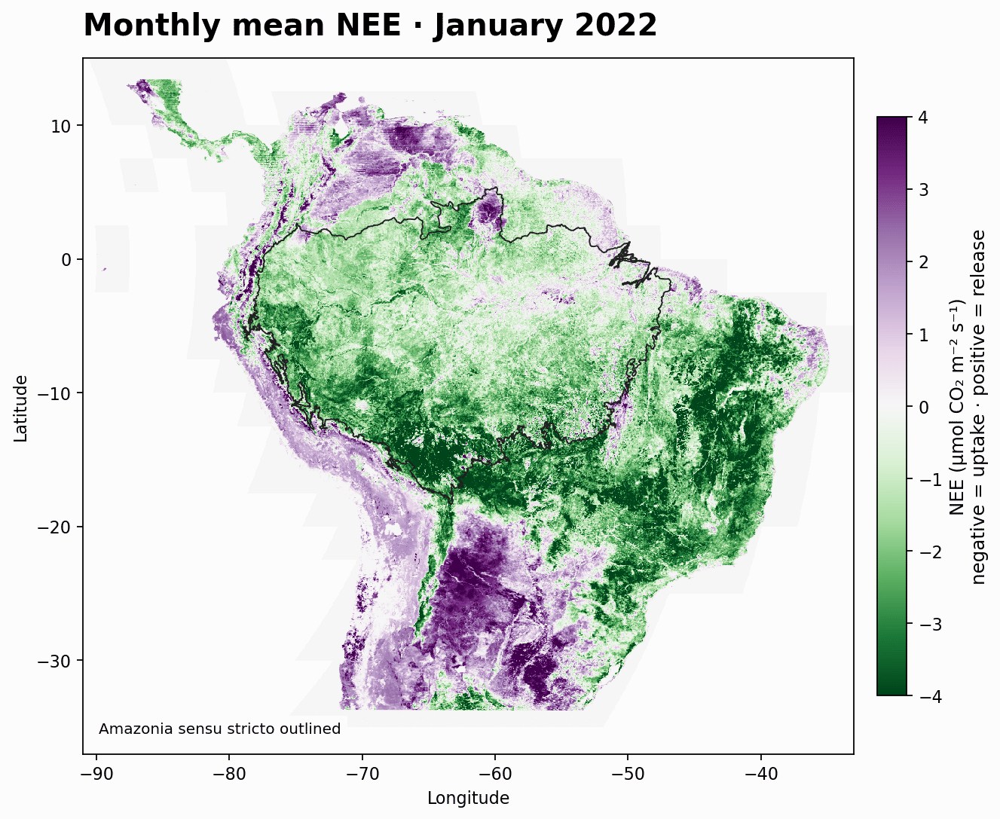

Regional top-down estimation
Investigating the regional carbon cycle through atmospheric CO₂ inversions.
Biogeochemistry · Atmospheric carbon cycle
Studying the regional carbon cycle through atmospheric CO₂ inversions, with a focus on tropical South America.
PhD researcher
Max Planck Institute for Biogeochemistry
Wageningen University
I am a PhD researcher in biogeochemistry, pursuing my doctoral research between the Max Planck Institute for Biogeochemistry and Wageningen University.
My work focuses on regional top-down estimation of the atmospheric CO₂ cycle. I am particularly interested in tropical South America and in nighttime atmospheric inversions.
Investigating the regional carbon cycle through atmospheric CO₂ inversions.
Focusing on the atmospheric carbon cycle at regional scales in tropical South America.
Exploring nighttime atmospheric inversions for regional CO₂ estimation.
Research visualization · 2022

Max Planck Institute for Biogeochemistry & Wageningen University
Thesis: Top-down partitioning of Net Ecosystem CO₂ Exchange (NEE) on regional scales
Universidad del Rosario · Bogotá, Colombia
Honors thesis: Two-way Interactions between Hydroclimate and Forest Vegetation Disturbances in Colombia
Pontificia Universidad Javeriana · Bogotá, Colombia
Code and projects
{kind=link}